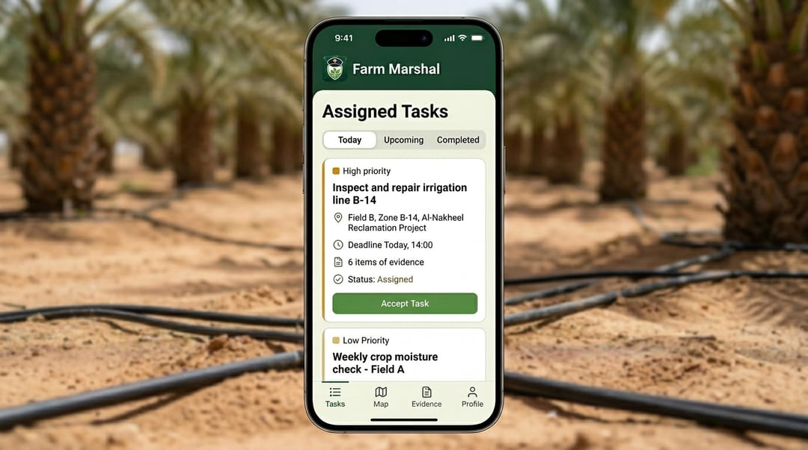

Al Sarrani Group × Oriel Company
Farm Marshal
From Observation to Evidence.
A proposal to launch an initial operational phase under specialist supervision in the Kingdom of Saudi Arabia.


Ministry of Environment, Water & Agriculture · Ministry of Interior · Ministry of Defense
Before we begin
The idea in four minutes
The real problem
This is not an agricultural problem.
It is an information gap.
What the gap costs
Six failures, one root cause
Detected late
Disease spreads before anyone sees it.
Water unattributed
Consumption known in total, never by zone.
Work unverified
A task is reported complete. Nothing proves it.
Hours spent walking
Inspection time consumed by travel, not judgment.
Expertise spread thin
One agronomist, thousands of hectares.
No season record
Quality cannot be evidenced after the fact.
Loss magnitude varies by crop, region, pest and season. What is not in dispute is that delayed detection increases both the cost and the complexity of intervention.
What Farm Marshal is
Connected evidence from diagnosis to decision and action
- Authorized drone inspection
- Ground sensors and instrumentation
- Field operator reports
- All previous seasons
timestamped evidence
with a set date
completion
The verified outcome becomes next season's baseline.
The tools we use
Three layers, three different jobs
| Layer | What it does | What it cannot do |
|---|---|---|
| Drone | Periodic whole-farm inspection; aerial fertilisation and pollination | Measure as precisely as ground sensors |
| Ground sensors | Continuous water, soil, electrical | See the whole field |
| Qualified expert | Diagnosis, accountability, final approval | Be everywhere at once |
Artificial intelligence
What the AI does and does not do
Does
- Rank farm zones by how far their performance differs from their usual historic pattern.
- Identify priority cases and route them to specialists
- Improve with every validated inspection
Does not
- Approve a treatment
- Close a case
- Carry legal or commercial accountability
"We did not find this because somebody happened to be looking. We found it because the same ground was photographed before, so the change is visible by comparison."
"And note that every image carries its location, time and flight. We will come back to that." — this plants the thread you pull on the Interior slide.
Live demonstration · 2 of 3
The farm's own expert, backed by a global network
- The farm's own agronomist keeps the decision — we extend his reach, not replace him
- He reviews the whole estate from his screen, and goes to the field only where his presence is genuinely warranted
- When a case carries unfamiliar detail, the answer does not stop at one person's experience; it extends to a worldwide network of experts.
- The network is vetted: academic qualification, crop specialisation, and a rating built from past recommendations
Platform walkthrough
From owner to worker: every step is visible and recorded
Farm owner
A live view of the farm
See farm activity and the cases that require a decision in one place.


A task with a deadline, tracked to completion



Environment, Water & Agriculture
Water you can account for.
Intervention before spread.
| What the Ministry gets | Mechanism |
|---|---|
| Water visibility per zone, per season | Irrigation checkpoints, valve telemetry, aerial detection of unusual change |
| Earlier plant-health intervention | Fixed-route repeat inspection, change detection against history |
| An announcement channel that reaches every participating farm | A Ministry notice appears in every farm and operator app, with proof of receipt |
| Aggregated reporting by region and by crop | Pooled figures with no farm identity — no individual estate is exposed |
| A standardised, comparable dataset | One inspection protocol across every participating farm |
| Verified land-rehabilitation progress | Dated geotagged evidence against planned boundaries |
| Extension reach to remote holdings | Verified expert network, no travel required |
What the Ministry sees is aggregated to region and crop level. Named-farm data stays with its owner, and is shared only with consent or on a defined legal basis.
Ministry of Interior
Every flight registered.
Every pilot identified.
Every track retained.
| Control | How it is enforced |
|---|---|
| Registered airframes | No unregistered airframe can be assigned a mission |
| Certified, identified pilots | Operator record bound to every mission; no anonymous flight |
| Geofenced boundaries | A mission cannot be generated outside the authorized polygon |
| Per-flight authorization | A purpose, a window, an approver — not a standing permission |
| Complete flight logs | Takeoff, landing, track and payload retained for the authority |
| Controlled imagery access | Every view and export is attributable to a known owner and a defined farm |
Ministry of Defense
Sovereign data.
A localizable capability.
Data residency
Imagery and telemetry are stored inside the Kingdom. No terrain imagery leaves the Kingdom.
No foreign telemetry channel
Flight and payload data do not transit a foreign manufacturer's cloud. This constrains hardware selection.
Knowledge-transfer path
Phase 1 benefits from ready solutions; phase 2 focuses on knowledge transfer and national capability to operate and develop the system.
Qualified operating team
Certified pilots, trained through specialist programmes to plan missions and operate drones safely and efficiently.
Airspace discipline
Routine civil missions flown correctly build the procedural culture that matters under pressure.
Responsible use, stated openly
We state the limits of monitoring technology from the outset and direct it to agricultural purposes under clear data-protection and privacy controls.
Governance
Who controls what
| Actor | Sees | Cannot see |
|---|---|---|
| Farm owner | Everything on their own estate | Any other estate |
| Expert | Only the farm assigned to them | Any estate or farm outside their remit |
| Drone operator | Only the authorized mission envelope | Case content or expert findings |
| Competent authority | Flight records; farm data on a defined legal basis | Anything without a logged basis |
| Platform operator | Audit metadata | Nothing silently — every read is logged |
Defined retention periods · immutable audit log · AI never replaces the responsible expert's decision — it only ranks where to look first.
Compliance
The flight authorization chain
request
no-fly check
assignment
assignment
approval
execution
submission
control
There is no step in this chain that can be skipped.
Farm value
Every better decision creates value inside the farm
Water and energy efficiency
- Cubic metres preserved per hectare
- Fewer kWh for each cubic metre
- Lower pumping cost per tonne produced
We monitor demand by area and measure each decision's effect on water, energy and production.
More focused inspection and response
- Shorter time from alert to verification
- Visits directed to priority zones
- Actions documented through closure
Inspection moves to the place that matters most, and decisions reach execution faster and more clearly.
Crop and quality protection
- Tonnes of loss avoided
- Improved quality grades
- Contribution margin protected
We calculate value from crop proven protected, not from the full value of production.
Farm-value detail · attribution and overlap
From potential savings to attributable impact
Irrigation attribution
Farm Marshal does not claim savings from new pipes, pumps or emitters. Its effect is measured in monitoring, decisions, response and verified execution. P1
Crop and work attribution
Inspection directs attention to priority zones; protected crop is contribution margin, not gross revenue or released staff time. F1, F3, P1
Adjusted benchmark value = comparable-study result × crop similarity × climate similarity × baseline similarity × operational readiness × Farm Marshal attribution. Scheduling saving = weather- and production-adjusted baseline − adjusted actual use. Leak water saved = abnormal flow × avoided duration.
Physical-infrastructure benchmark: a Saudi comparison reported about 27% water saving for subsurface versus surface drip while maintaining yield; Farm Marshal's contribution is measured separately. S7
P1: pilot measurement · F1: invoices · F2: water and energy meters · F3: production and sales · S7: subsurface versus surface drip experiment, physical-infrastructure benchmark only
National-value detail · auditable response
From official announcement to documented action
Water indicator
m³/ha · m³/productive palm · m³/marketable tonne. F2, F3, P1
Response indicator
Time from announcement or detection to action; acknowledgement and execution within the defined window. P1
Capability indicator
Fields with a unified record, confirmed alerts by crop and region, and trained local experts and operators. P1
Expected response benefit = reduction in missed or delayed action probability × avoidable incremental loss × approved attribution. Receipt of an announcement alone has no financial value.
S8: MEWA relevant guidance and alerts · F3: field and production records · P1: pilot register · consent, privacy and governance boundaries apply to every shared datum
Localization
What this builds in the Kingdom
Certified remote pilots
We employ already-certified pilots in each operational region.
Field operators
We train them on evidence capture, ground verification and equipment handling.
Global expert network
Agronomy expertise from specialists worldwide reaches the Saudi farm without relocating them.
Imagery review and annotation
The expert watches the footage and annotates the image itself; each season's results become lessons learned for the farm.
In-Kingdom operations centre
Mission planning, monitoring and farm support, staffed locally.
National knowledge base
Water use per region and season, diseases detected, highly-rated recommendation counts, and how the deployed sensors actually performed.
The national knowledge base is built from farms that consented to share, in aggregated form. Headcount figures go in once the pilot scope is fixed — present only numbers you can defend.
Control over every farm.
Confidence in every decision.
One model that scales…
in step with the ambitions of Saudi Vision 2030.


Farm Marshal · Al Sarrani Group × Oriel Company
Questions & Answers
Al Sarrani Group × Oriel Company
Farm Marshal
From Observation to Evidence.
A proposal to launch an initial operational phase under specialist supervision in the Kingdom of Saudi Arabia.
Ministry of Environment, Water & Agriculture · Ministry of Interior · Ministry of Defense
Not presented
Appendix
Navigate down, or press Esc for the slide overview.
The request
One supervised pilot
| Scope | N farms / X hectares in [named region], one irrigation season |
| Aircraft | N registered airframes, listed by type and serial |
| Operators | N certified remote pilots, named, security cleared |
| Regulatory | Mission authorization under the existing framework, exact route to be confirmed with your teams |
| Hosting | Approved in-Kingdom environment, named |
| KPIs | Water visibility · inspection time per hectare · detection-to-action time · verified closure rate · zero airspace incidents |
| Reporting | Monthly to a joint committee; independent agronomist review at close |
| Funding | [amount], as [grant / co-funding / matched against sponsor contribution] |
| Exit | Either party may end it at any point; all data and logs remain with the authority |
Scope of the request
What we are not asking for
- Not nationwide unrestricted drone access
- Not exemption from any existing regulation
- Not a sole-source national contract
- Not access to any data outside the participating farms
- One supervised pilot, on defined sites, with defined aircraft, measured against KPIs you approve
Farm Marshal model detail · cost and pricing
A clear price for a sustainable service
Cost to serve
Farm mapping, devices and connectivity, monitoring, platform, expert review, field verification, support, integration, maintenance, security and travel. F4
Pricing models to test
Service-scope fee · fee by area, crop and complexity · base fee plus a capped independently verified component. P1, F4
Sustainability indicators
Gross margin, cost per 1,000 ha, expert hours, cloud/connectivity, support/verification, recurring revenue, break-even and working capital. F4
Value-capture rate = annual Farm Marshal fee ÷ the farm's documented total benefit. A performance component requires a cap plus pre-agreed baseline, attribution, dispute resolution and audit rules.
F4: service cost-component register · F1/F3: customer-value records · P1: independent impact result · any public contribution funds a defined measurable public outcome
Farm-value detail · baseline and references
Water and energy baseline before calculating any SAR
2,954–5,261 m³/acre/year
Reference water range
Saudi date-palm range converted from hectares to acres; adjusted for climate, soil and irrigation.
S5 · S6
2,471 acres
Reference area
Equivalent to 1,000 hectares; replaced by documented productive farm area.
E2
100,000 palms
Productive-palm reference
2,471 acres × 40.5 palms/acre; replaced by actual productive-palm count.
S1 · E2
F1 · F2 · F3
Records that replace references
Electricity invoice, water and energy meters, and production and sales records.
Direct farm evidence
E1 · Pumping energy and cost per cubic metre
Energy/m³ = (1,000 × 9.81 × lifting head) ÷ (efficiency × 3.6m)Energy to lift each m³
At 100m and 70% = 0.389 kWh/m³Calculated reference output
Cost/m³ = 0.389 kWh × SAR 0.22/kWh = SAR 0.086/m³Electricity cost of pumping
S4 · E1 · F1 · F2
E2 · Reference farm and production
2,471 acres × 40.5 productive palms/acre = 100,000 palmsReference palm count
100,000 palms × 60 kg/palm = 6,000 tonnes/yearProduction-volume sensitivity
S1 · E2 · F3
S1: GASTAT Agricultural Statistics 2024 · S4: official agricultural tariff · S5: Springer Saudi date-palm water study · S6: King Faisal University Al-Ahsa
Partnership sustainability · fair value sharing
A business model that grows only when farm value grows
value
fee
quality capacity
scale
SAR 0 unexplained
The trust rule
Every financial value links to a source, formula, beneficiary and auditable result. P2
Farm value first
Net farm value = verified cash benefit − service cost − additional operating cost. The owner retains the largest private-value share. F1, F3, P1
Sustainable service revenue
Implementation, subscription, expert review, integration and support are distinct from public value; margin is built from actual cost to serve. F4, P1
As verified farm value increases, Farm Marshal gains the capacity to grow and the sector gains a model that can be repeated, measured and governed.
F1: farm expenditure invoices · F3: production and sales records · F4: service-cost model · P1: measured pilot result · P2: evidence and calculation register design objective
National value · Saudi statistical reference
Every cubic metre preserved improves Saudi agricultural efficiency
12.298bn m³
Agricultural water use in 2023
The national opportunity measured first at farm level, not farm cash value. S1
9.356bn m³
From non-renewable groundwater
Reported separately in every water-preservation indicator. S1
1.923m tonnes
Date production in 2024
A national production reference, not a single-farm forecast. S1
60 kg/palm
Derived national average
1.923bn kg ÷ more than 32m productive palms; varies by variety, region and age. S1, E2
Measurable institutional capacity
Water per marketable tonne, confirmed alerts, detection-to-action time and recommendations executed with evidence. P1
When one farm's efficiency becomes measurable and repeatable, national value begins: water in cubic metres, protected production in tonnes, and timely documented response.
S1: GASTAT Agricultural Statistics 2024: 2023 agricultural water use, non-renewable groundwater, date production and productive palms · E2: transparent derivation · P1: operational measurement results
A1
Verification register
Rendered live from config/presentation.config.js. Any item marked
Blocking must be resolved or removed before this deck is presented.
A2
Expert vetting
- Identity verification before any case assignment
- Certification and qualification records held on file
- Crop and region specialisation matched per case
- Declared conflicts of interest, recorded and reviewable
- Peer review: junior findings challenged by senior specialists
- Rating by both platform and customer, visible in the assignment decision
A3
Heat, dust and salt
Hardware qualified for European or Egyptian conditions fails in the Gulf. This is a cost line, not an afterthought.
- Shielded sensor housings rated for ingress and thermal load
- Camera protection against abrasive dust
- Electromagnetic-induction sensing where contact sensors corrode
- Maintenance intervals set for the environment, not the datasheet
Hardware suited to Gulf conditions costs more than the equivalent European deployment. Service pricing reflects that, and is still cheaper than the failure it prevents.
A4
Data retention, deletion and lawful access
- Farm imagery and telemetry stored in an approved in-Kingdom environment
- Retention periods defined per data class before the pilot begins
- Deletion on request, subject to agreed regulatory retention
- Authority access on a defined legal basis, logged like any other access
- Immutable audit log covering every read, export and modification
A5
Incident and emergency procedures
- Lost-link procedure: defined return-to-home behaviour and holding pattern
- Emergency landing: pre-identified sites within each authorized polygon
- Mandatory incident report to the authority within an agreed window
- Flight operations suspended pending review after any incident
- Aircraft maintenance records retained and inspectable
Documented before the first flight, not after the first incident.
A6
Phase roadmap
Supervised pilot
one season
Regional expansion
measured KPIs
National protocol
Saudi-content roadmap
Each phase gated on the previous phase's measured result, reviewed jointly. Expansion is earned, not scheduled.
A7
Economic evidence and calculation register
Evidence
ID, variable, value and unit, period, source/page, extraction method and confidence.
Calculation
Baseline, formula, adaptations, attribution, beneficiary and possible overlap.
Review decision
Accept or exclude the value, named reviewer and verification status.
Acceptance rule: no value enters a scale decision without a source or formula, appropriate analysis unit, confidence rating and overlap review.
A: direct farm evidence · B: controlled operating pilot · C: Saudi government reference · D: academic/international reference · E: management assumption · U: unknown value
A8
What we are, and what we are not
"We are not agricultural experts, and we will never claim to be. We build the system that makes qualified agronomists faster, more precise, and accountable. The agriculture stays with the agronomists. The evidence chain is ours."